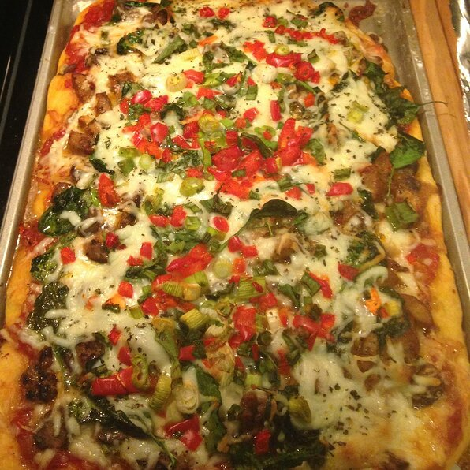

The Ultimate Pizza

Description
A delicious easy to make pizza that can feed the whole family. With just a few simple ingredients and about an hour of your time, you can make a fresh pizza any night of the week.
This is the perfect recipe for yourself, some friends, or even the entire family. Don't forget to look at other recipes for breadsticks and dipping sauce to accompany.
Ingredients
- 1 tablespoon olive oil
- 1 (12 ounce) bag Birds Eye® Recipe Ready Pizza Supreme Blend
- 1 (10 ounce) pre-baked whole wheat or regular pizza crust
- 1 cup prepared pizza sauce
- 1 ounce sliced pepperoni
- 1 cup shredded mozzarella cheese
Steps
- Preheat oven to 450 degrees F
- Heat oil in large nonstick skillet over medium-high heat and cook Recipe Ready Pizza Supreme Blend, stirring occasionally, 10 minutes or until vegetables are softened and any liquid is absorbed.
- Arrange pizza crust on baking sheet and evenly spread with pizza sauce. Top with vegetable mixture and pepperoni. Sprinkle with cheese. Bake 10 minutes or until cheese is melted.
Return to home page